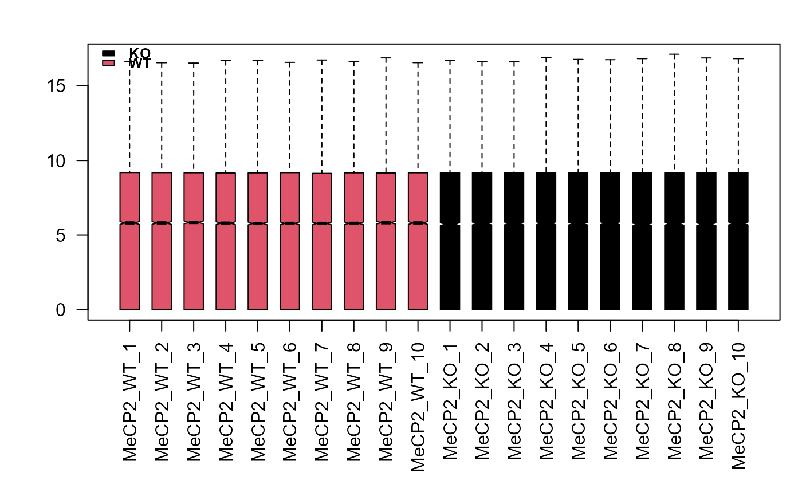
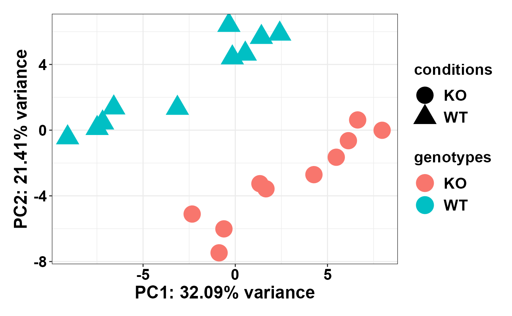
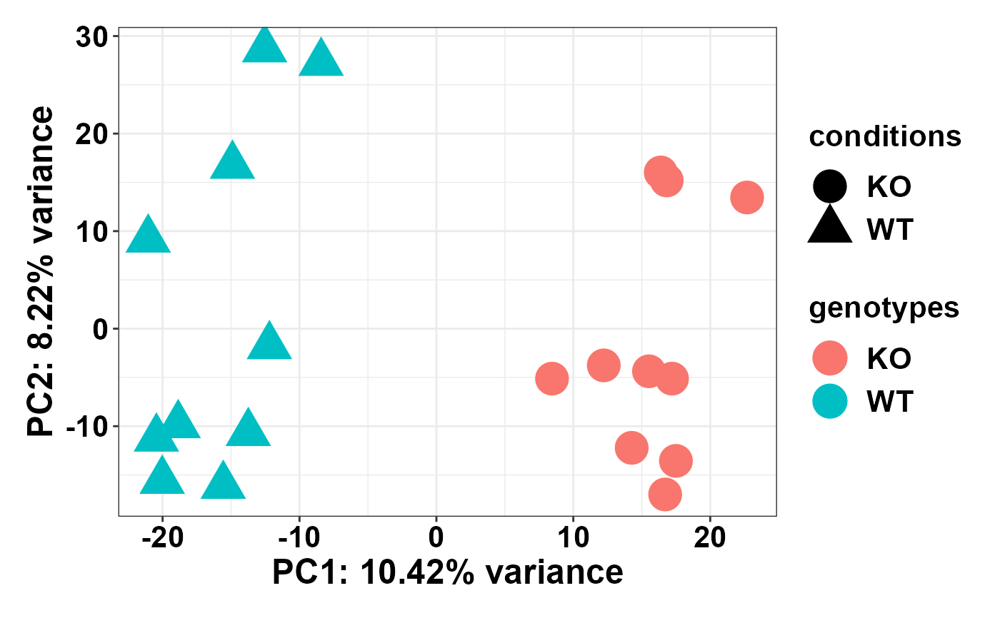
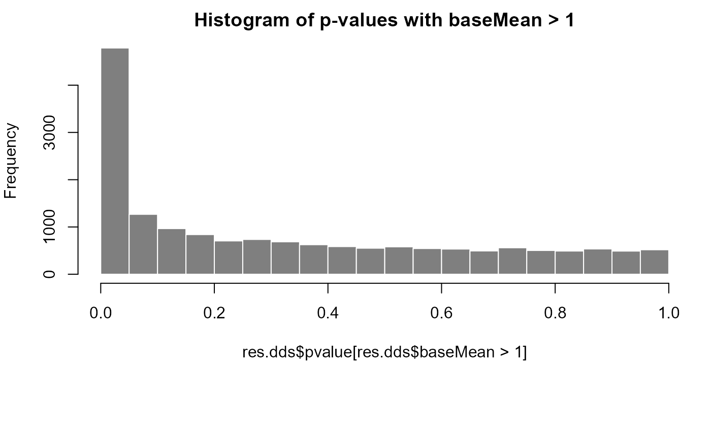
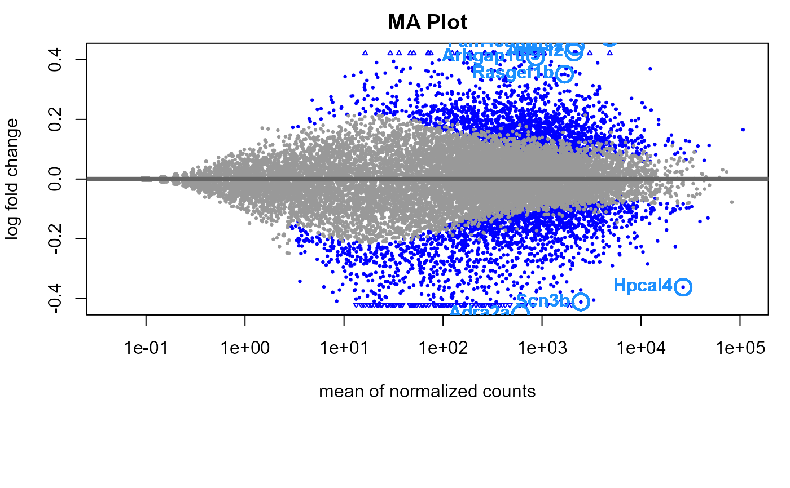
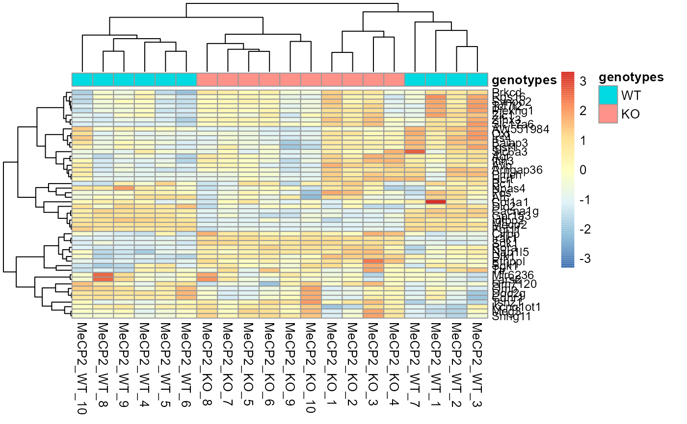
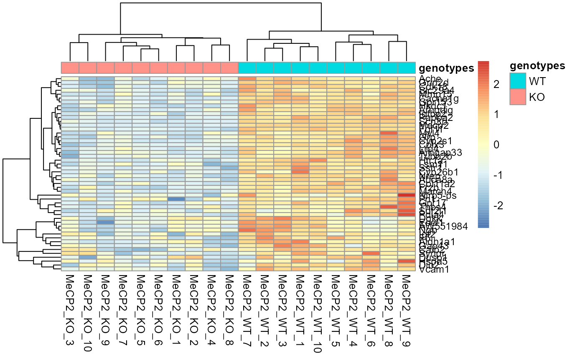
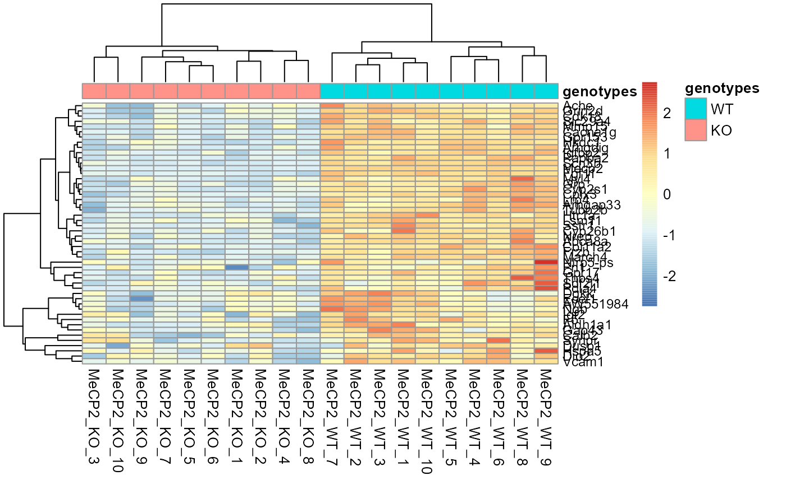

wrapper around Overlap plots
overlap_wrapper.Rd"Wrapper around overlap plots" takes "DESeqCalculation" results, k-mean clustering index groups, and computes running average plots (log2 fold change vs mean gene length).
Uses Overlay Gabel's moving average function which calculates the mean of log2 fold change and genomic lengths. Computes p-values using student t-test function, and returns overlay line plots.
overlap_wrapper(
dat,
refseq,
KO.idx,
WT.idx,
WT1.idx,
WT2.idx,
bin.size,
shift.size,
shrink_lfc = F
)Arguments
- dat
Differential analysis results from "DESeqCalculation"
- refseq
reference sequence
- KO.idx
Treatment group index
- WT.idx
Control group index
- WT1.idx
WT1 index
- WT2.idx
WT2 index
- bin.size
bin size
- shift.size
shift size
- shrink_lfc
Shrink log2 fold changes
Value
results and plots
Examples
# Generate arbitrary toy data
dat <- matrix(rnbinom(n=10000, mu=100, size= 1/0.5),ncol=20)
for (x in 1:250) {
dat[x,] <- dat[x,] + sample(800:1200, 10, replace=T)
}
for (x in 250:500) {
dat[x,] <- dat[x,] + sample(0:100, 10, replace=T)
}
for (x in 1:5) {
dat[,x] <- dat[,x] + sample(800:1000, 5, replace=T)
}
dat <- matrix(as.numeric(dat), ncol = ncol(dat))
colnames(dat) <- c("MeCP2_WT_1", "MeCP2_WT_2", "MeCP2_WT_3",
"MeCP2_WT_4", "MeCP2_WT_5", "MeCP2_WT_6", "MeCP2_WT_7", "MeCP2_WT_8",
"MeCP2_WT_9", "MeCP2_WT_10", "MeCP2_KO_1", "MeCP2_KO_2", "MeCP2_KO_3",
"MeCP2_KO_4", "MeCP2_KO_5", "MeCP2_KO_6", "MeCP2_KO_7", "MeCP2_KO_8",
"MeCP2_KO_9", "MeCP2_KO_10")
vec <- as.character(seq(1,500, by = 1))
row.names(dat) <- vec
genotypes <- factor(c(rep("WT", 10), rep("KO", 10)), levels = c("KO", "WT"))
# Run Differential Analysis
wholeCell.KO <- DESeqCalculation(dat = dat,genotypes = genotypes, fc = 1.15)
#> converting counts to integer mode
#> [1] 500 20
#> -- note: fitType='parametric', but the dispersion trend was not well captured by the
#> function: y = a/x + b, and a local regression fit was automatically substituted.
#> specify fitType='local' or 'mean' to avoid this message next time.



#> using pre-existing size factors
#> estimating dispersions
#> gene-wise dispersion estimates
#> mean-dispersion relationship
#> -- note: fitType='parametric', but the dispersion trend was not well captured by the
#> function: y = a/x + b, and a local regression fit was automatically substituted.
#> specify fitType='local' or 'mean' to avoid this message next time.
#> final dispersion estimates
#> fitting model and testing
#> 291



 

 # Plot figures
mat <- wholeCell.KO$results[,c(8:27,1,3)]
colnames(mat)[21] <- "gene.name"
grp.idx <- WTgrp_kmeans(control_mat = mat[,1:10])
res1 <- overlap_wrapper(dat = mat, refseq = refseq, KO.idx = c(11:20),
WT.idx = c(1:10), WT1.idx = grp.idx$WT.idx1,
WT2.idx = grp.idx$WT.idx2, bin.size = 200,
shift.size = 40)
#> Error in is.data.frame(y): object 'refseq' not found
res1$plot
#> Error in eval(expr, envir, enclos): object 'res1' not found
# Plot figures
mat <- wholeCell.KO$results[,c(8:27,1,3)]
colnames(mat)[21] <- "gene.name"
grp.idx <- WTgrp_kmeans(control_mat = mat[,1:10])
res1 <- overlap_wrapper(dat = mat, refseq = refseq, KO.idx = c(11:20),
WT.idx = c(1:10), WT1.idx = grp.idx$WT.idx1,
WT2.idx = grp.idx$WT.idx2, bin.size = 200,
shift.size = 40)
#> Error in is.data.frame(y): object 'refseq' not found
res1$plot
#> Error in eval(expr, envir, enclos): object 'res1' not found